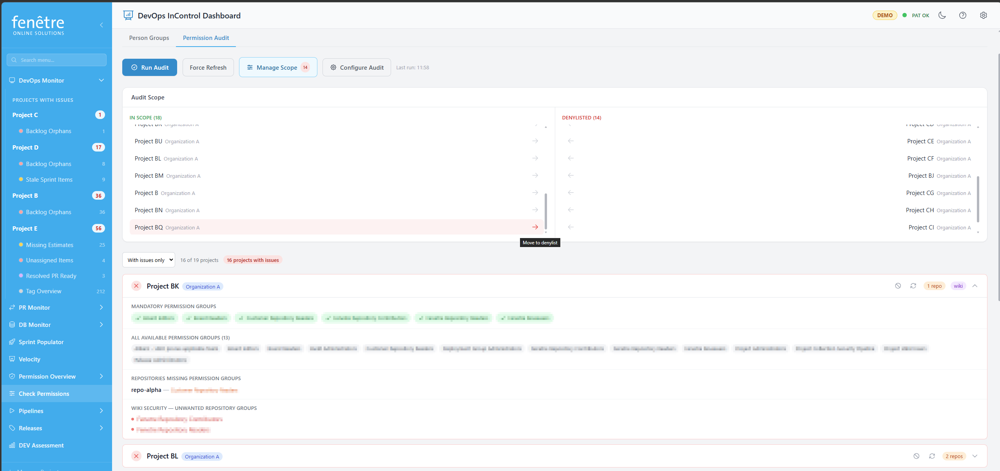

Permission Audit
The Permission Audit screen has two functions: looking up which groups a person belongs to, and running automated security audits across your projects to check that permissions follow your organisation's rules.

Looking up a person's group memberships.
Person Groups Tab
Use this tab to quickly look up which security groups a specific person belongs to.
- Select a person from the dropdown or type their name in the search box.
- Their group memberships are shown, organised by project.
- Each project section can be expanded to see the full list of groups.
Permission Audit Tab
The audit automatically checks your projects against a set of rules you define. It answers questions like:
- Do all projects have the required security groups?
- Are there any security groups that contain teams (which they should not)?
- Do repositories have the correct groups assigned?
- Are area paths properly secured?
How to Run an Audit
- Go to the Permission Audit tab.
- Set up your scope: choose which projects to include and which to exclude (denylist).
- Configure the audit rules (see below).
- Click Run Audit. Results appear per project with pass/fail indicators.
Audit Rules
| Rule | What It Checks |
|---|---|
| Mandatory Group | Verifies that a required security group exists in every in-scope project. |
| Team Deny | Verifies that security groups do not contain Azure DevOps teams or sub-groups (they should contain individuals only). |
| Repository Security | Verifies that repositories have the specified groups in their access control list. |
| Wiki Security | Verifies that the project wiki has the correct groups assigned. |
| Area Security | Verifies that area paths have the specified groups assigned. |
Configuring Groups
In the Configure Audit panel, you define which security groups your organisation uses. For each group you specify:
- Whether it should be connected to area paths
- Whether it should be connected to repositories
- Whether it should be connected to the wiki
Denylist
Some projects may not follow the standard rules (e.g. archived or experimental projects). Add these to the Denylist to exclude them from the audit.
Tip
You can re-run the audit for a single project by clicking its refresh button, without re-scanning everything.
Note
The audit requires your PAT to have Identity (Read) and Security (Manage) scopes. If these are not set, some checks may fail.